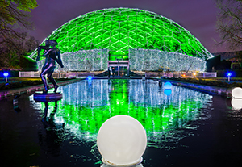

-
 St. Louis Arch
St. Louis Arch -

Missouri Botanical Gardens
-
 St. Louis Zoo
St. Louis Zoo
Heading for section
Possible subheading for section
Brief info about this page and how users can interact with the site

Brief info about this page and how users can interact with the site